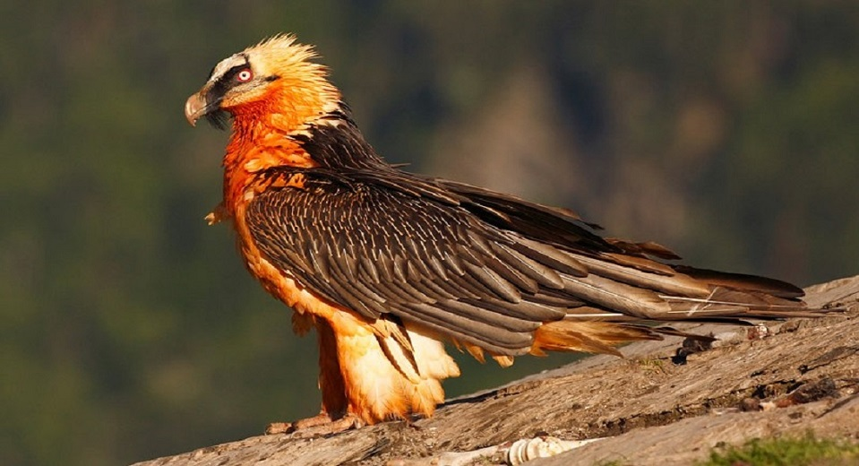
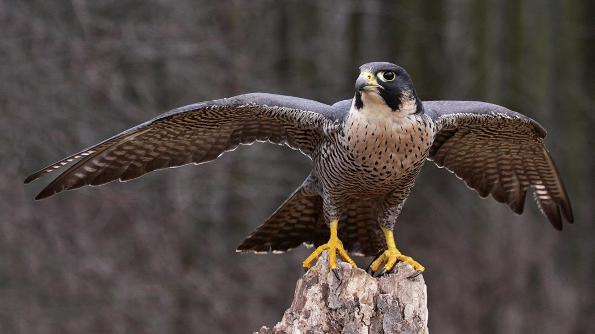
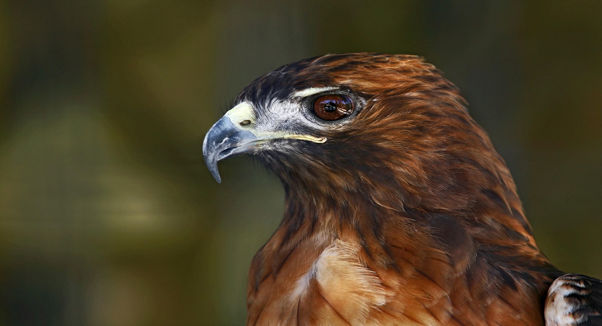
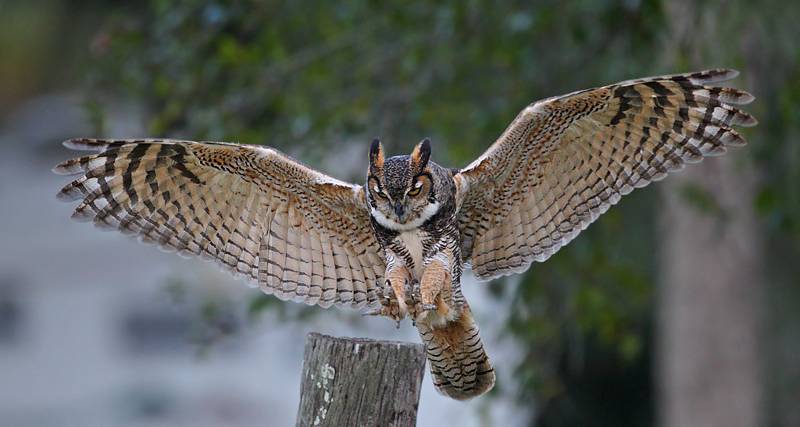
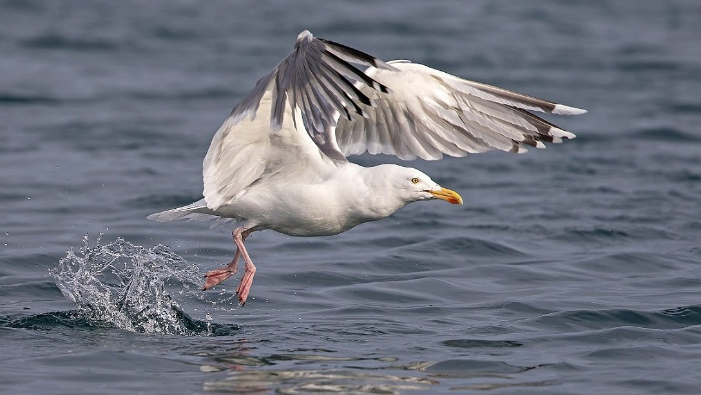

SNOWY OWL

Snowy owl are one of the biggest owl species of world.These owl's maximum size is upto 50-70 cm which is one of the biggest owls compared to other and their wingspan is 1.5 metres whereas they weigh upto 3 kilograms and their lifespan is upto 10 years.These falcons are almost white with some black coloured spots.Snowy owls are mostly found in the northern part of the globe that is to the northern America,Europe,Russia.These owls are silent attackers their preys can't hear their flying they are stealth attackers.Snowy owls are feed on a variety of preys such as rabbits,cats,gulls,rats,racoons and even ducks.Snowy owls mostly attack their preys in the dark.These owls are also dangerous to humans when they are nearby their nests.Snowy owl's are very defending if they feel any kind of danger near by them.
LAMMERGEIER
Lammergeier also known as bearded vulture this ferocious bird is 1.25 metres with a wingspan of 280 cm and weighs upto 6 kgs.Lammergeier have thick,strong and light orange coloured neck these birds are mostly in rusty red or white in colour and they have black coloured strip across their eyes which makes them look scary.These vultures are mostly found in high mounatin ranges of the great Himalayas.As vultures are scavengers they mostly feed on dead bodies of animals but this bird feeds only on bone marrow they can swallow a whole piece of bone and it gets digested too within 24 hours the reason behind this fast digestion is because the acid produced in the stomach have a ph value 1.Lammergeier are very aggressive birds they can kill hares,big lizards,birds,even a large sized goats,etc.Because of their big strong legs and sharp claws they are able to kill many large species.These vultures have even killed and injured a number of people with their claws.Lammergeiers only eat flesh just to feed their young ones as they are small they are unable to swallow bones.
PEREGRINE FALCON
Peregrine falcon is natural born hunter and one of the most fastest flying bird's of the world,it's approximate size is 60 cm whereas it's wing size is 1.2 m and weighs upto 1.5 kgs these birds dives at a speed of 390km/h which is fastest among any bird species this bird has a lifespan of 16 years. These falcons are mostly found in tundra regions,highly elevated mountains and in rainforests too.These birds mostly lives on top of high sized buildings and mountains valleys.Peregrine falcons are monstrous feeding birds they can even hunt a prey 5 times bigger than their size they feed on a number of different preys such as pigeons,ducks,squirrels and even small sized cats,etc.Falcons are also threat to human beings they can't kill them but they can injure them very badly with their claws.Falcons are very good terrestial hunters their eyesight is very sharp they can hunt the smallest prey from a good height.Peregrine falcons sharp big claws and it's bented beak helps them to eat the flesh of any sized prey.They main predators of these birds are big sized owls and hawks.
RED TAILED HAWK
Red tailed hawk this living raptor lengths upto 60 cm whereas it's wingspan is 140 cm and weighs upto 2 kg.The most common appearance of the hawk is it's red coloured tail and it's whole body is fully dark brown in colour and the neck is light brown in colour.Red tailed hawk are mostly found to the north of America in grasslands,rainforests,fields and also in high mountain ranges.These birds are not to much aggressive compared to others.This bird mostly feeds on common preys such as turkeys,chickens,rodents,birds,bats,etc.Red tailed hawk use the most common way to attack it's preys like the other birds they search for their prey from a great height and then grab their prey diving with a great speed.Red tailed hawk mostly grab their prey from neck which very dangerous.
GREAT HORNED OWL
The horned owl also known as tiger owl this large owl lengths upto 65 cm whereas it's wingspan is 155 cm and weighs upto 2 kg and the main identification of this owl it's long horn looking ears which is 15 cm.Tiger owls are tend to be live more compared to other owls that is 30 years.These owls are mostly found in the islands of Costa Rica,West Indies,Central America and also in some places of South America.Great horned owls are found in rainforests regions,tundra,swamp forests,mountainous regions almost evry regions of the world except the snowy region.These owls can be found up at a very great height of trees,mountains,etc.Tiger owls are not smart birds in case of hunting but when ever they hunt they are very active,aggressive owls and stealthy hunters.They have a special ability to camouflage in any region during day time as well as night.These owls are silent attackers they mostly attack their prey at mid-night.Their common preys are rats,insects,rabbits,cats,dogs,birds such as chickens,peafowl (one of the most important prey),turkeys.In rare cases they even eat dead bodies to which gets digested to within 10 hours.
EUROPEAN HERRING GULL
European herring gulls this large gull specie lengths upto 0.67 m whereas their wingspan is 1.55 meters and weighs upto 1500 grams.These gulls are famous to the western Europe and it is mostly found in the other European countries and it is mostly found near the coastal areas.They can be identified by their wings the tip of the wings are black whereas the whole wing is greyish colour and their body is covered with white coloured featheres.European gulls are even scavengers they feed on dead fishes and animals too and they mostly feed on crabs small fishes,birds,etc these birds can't swim but they can they very alert they can catch the fastest fish jumping on the water surface.European gulls are highly tempered birds their eye vision is really sharp in daytime and even in night time too.They never attack alone they attack in folks there are number of reports that these birds can even injure humans and they mostly attack in eyes or other delicate parts of humans.
OSTRICH